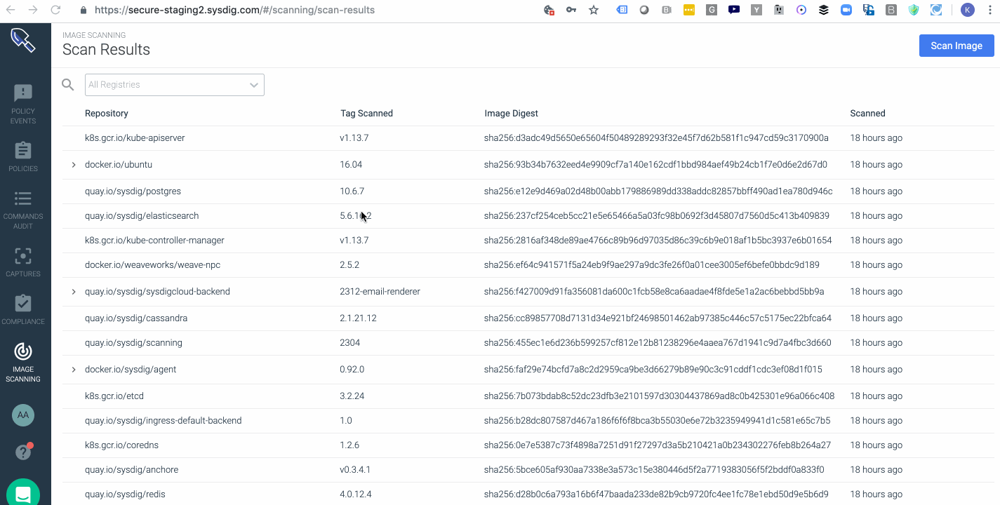

Review Scan Results
When you have set up your build environment for scanning (if applicable), added the desired registries, and either triggered a scan manually or configured an alert to scan automatically, then an image scanning report is generated.
There are different ways to access scan results:
Externally (for developers): From an external Continuous Integration (CI) tool such as Jenkins.
Internally (for security personnel): From the Runtime tab or the Scan Results tab (formerly titled "Repositories") in the Image Scanning module of Sysdig Secure.
Runtime View
Runtime provides an always-updated report on images that have been running in your environment over the past 1 hour.
 |
In the left column, view the Entire Infrastructure or drill down to a namespace.
The report in the right column lists Unscanned and Scanned images. You can drill down to the Scan Result Details views .
Unscanned Images
Select an unscanned image to manually trigger a scan.
Scanned Images
Select a scanned image to drill down into the details: a Summary page, Policy details, Vulnerability details, and Content violations (e.g., licenses).
Scan Results View
Use the Scan Results list to:
View all scans that have ever been done
Search for a specific image, including those that are not running
Filter based on where the images are deployed
Easily browse/expand the different repositories to see the
image:tagsthat were evaluated, and their results.
|  |
Once you drill down into scanned images on the list, the Scan Result Details views are the same as from the Runtime panel.